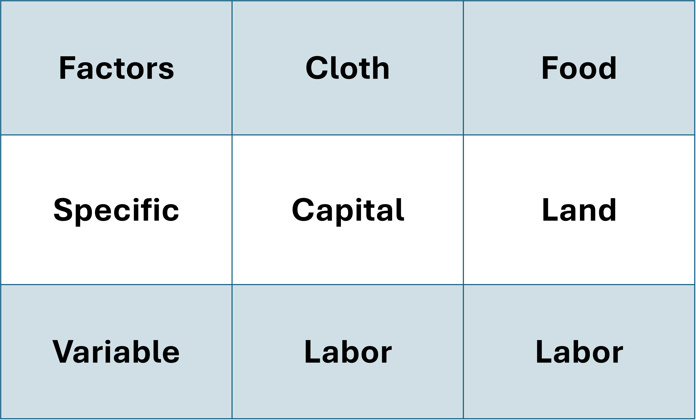
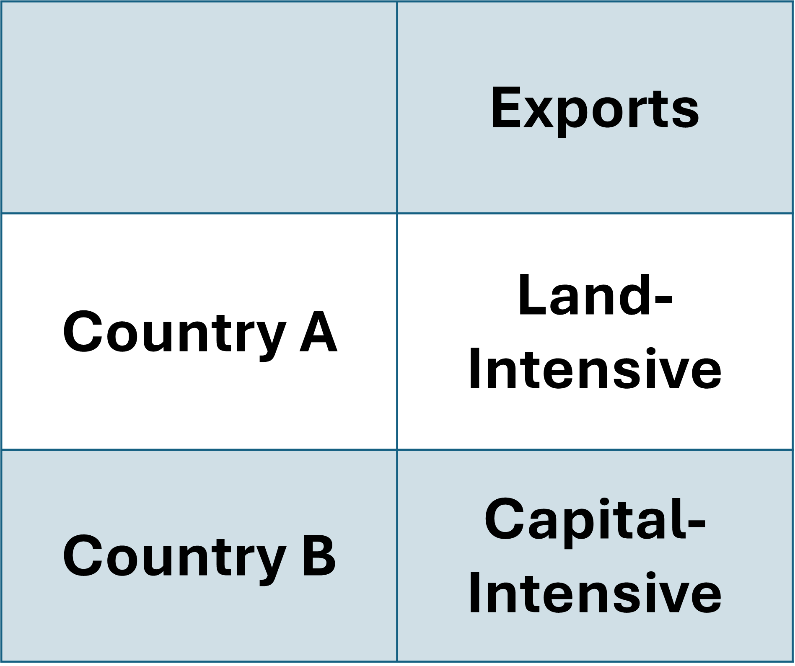
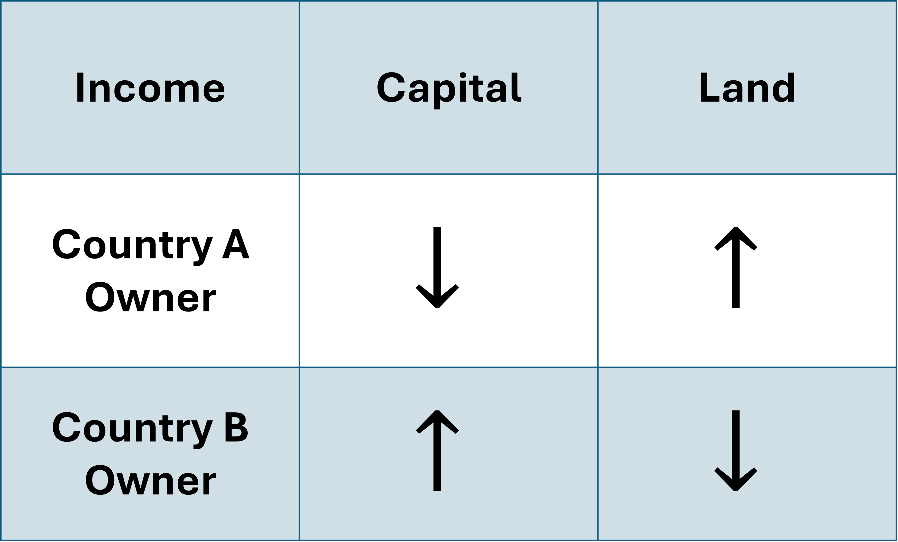

Heterogeneity Across Time
We can consider the Short-Run stickiness in our HO Model by adding some conditions:
- Three Input Factors: Labor (L), Capital (K), Land (T)
- Two Goods: Cloth and Food
- Production Functions:
- \(Q_{c} = f(K, L_{c}) \Rightarrow \;\) Cloth is made with Capital and Labor employed in Cloth
- \(Q_{f} = f(T, L_{f}) \Rightarrow \;\) Food is made with Land and Labor employed in Food
- Labor across industries must sum up to total labor: \(L = L_{c} + L_{f}\)
Specific and Variable Factors
We call Labor our variable factor because it is used in the production of both goods
And Land and Capital are specific factors because they are exclusively used for specific goods
With these modifications to the HO Model, we have now extended it into a Specific Factors Model
Specific Factors are immobile
- They cannot move between the two industries
Variable Factors are mobile
- Labor can freely move across industries
Trade Patterns
Trade flows will be determined similarly to our HO Model
The difference is that Specific Factors will play a key role in determining Comparative Advantages
Trade flows will be determined by the relative endowment of the Specific Factors
Trade Patterns
Let’s say that Country A is relatively well endowed with land and Country B is relatively well endowed with capital

Country A will Export
- Food
Country B will Export
- Cloth
Specific Factors Dynamics
Let’s look at the steps of openning to trade:
- Each country opens up to trade
- They each follow their comparative advantage and move toward greater specialization
- The shift in production reduces demand for the specific factor used in the non-specialized industry
- In our example, the demand for capital in Country A goes down
- Income for the less utilized specific factor also declines
Specific Factors Dynamics
This model helps us view income distribution effects of trade more clearly
So we have Country A capital owners be hurt, due to the economy moving away from production of capital-intensive cloth
On the other hand, we have Country A landowners experience the opposite effect


Specific Factors Dynamics
How about Labor?
Because labor is mobile between industries, workers that are laid off in the declining sector will find employment in the expanding sector
Additionally, prices of both goods shift from what they were under autarky
In Country A where Food is the export, we would see:
Price of Food
Increase!
Price of Cloth
Decrease!
Ask why \(\rightarrow\) because world price for export is higher than at home and import is lower than at home
Effects on Variable Factor Income
The income distribution effect on the variable good is ambiguous
The net effect depends on which is strongest, rising Food prices or falling Cloth prices
It also on their consumption patterns
In its most basic form, we have adapted the HO Model in such a way that we can observe income distribution effects:
Across factor inputs that are specific to production (Specific Factors)
Within factors used in both forms of production (Variable Factors)